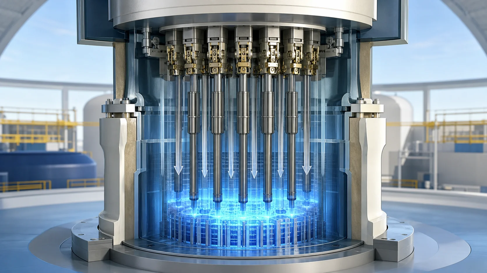
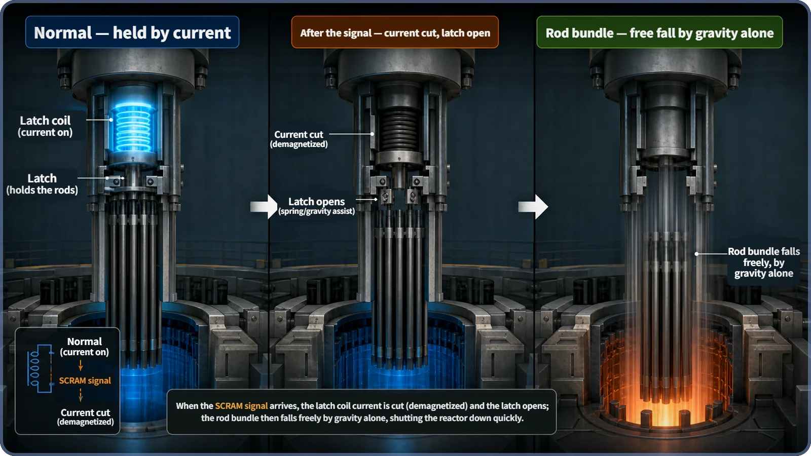
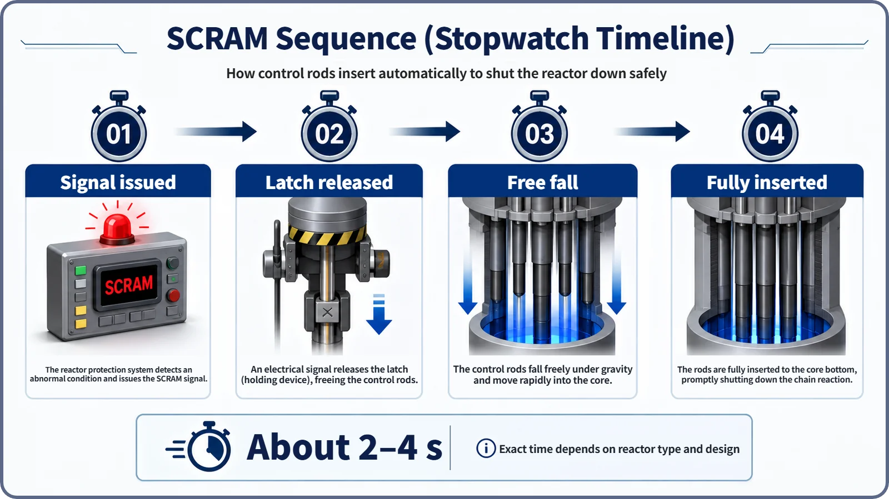

Reactor Kinetics & Reactivity · 113
Just Let Go — How a Scram Stops a Nuclear Reactor
A scram does not push the control rods in. It lets go of them, so the reactor stops even when power fails.

A scram does not push the control rods in; it lets go of them. An electromagnetic latch holds each rod only while current flows. Cut the current, by a shutdown signal or by any loss of power, and the rods fall into the core by gravity alone within seconds, driving the reactor deeply subcritical.
A brake that works by letting go
Imagine a roller coaster whose emergency brake, when a serious fault is detected mid-ride, is designed to engage "slowly, at a set speed." Not a comforting thought. A device that stops something in an emergency has to be, above all, fast and certain. In a nuclear reactor, that role belongs to the scram.
A reactor stops on a different principle from a theme-park brake. A brake presses something new against a moving part. A scram is closer to the opposite: it lets go of something it was holding all along.
Normally, an electromagnet holds on
The control rods in the core absorb neutrons and so regulate the fission chain reaction. In normal operation, each rod hangs at the desired height, gripped by an electromagnetic latch in the drive mechanism. The latch keeps its grip only while current flows through its coil. Even routine fine-tuning, moving the rods a little at a set, slow speed, is done by shifting this latch one notch at a time.
The moment the reactor protection system issues a shutdown signal, the current to that coil is simply cut. The latch loses its grip, and like a hand letting go, the control rod assemblies fall toward the core with no help from a motor, driven by gravity alone.

Why "letting go"? Safe even when things fail
If stopping the reactor required switching something on, a failure of that very device could leave the reactor unable to stop. A scram works the other way round: the rods stay lifted only while current flows, and if that current is lost for any reason, they drop on their own.
So a scram happens not only on a deliberate shutdown signal but also when the power supply itself is lost, through a blackout, a broken wire or a control computer failure, with no separate power needed. Engineers call this fail-safe: when something fails, the system falls toward the safe side.
How fast, and how certain?
Normal insertion is a motor pushing the rods slowly. A scram is the opposite extreme: all the control rods fall at once under gravity. It is not a vacuum free fall; the rods drop through the coolant water, so buoyancy and drag make their acceleration smaller than pure gravitational acceleration (about 9.8 m/s²). Still, the fall is overwhelmingly faster than motor-driven insertion. Just before the rods reach the bottom of the core, a hydraulic cushion (a dashpot) gently slows them so that the rods and surrounding structures are not damaged. Its detailed design varies by manufacturer and reactor type.
The time from signal to full insertion is usually described as "just a few seconds," with the exact figure depending on reactor type, manufacturer and regulatory requirements. That is far too fast for anyone to react by hand; operators can press a scram button, but most scrams happen automatically the moment an instrument reading crosses its limit.

Not every reactor "drops" its rods
Gravity free fall is typical of reactors whose control rods enter the core from above, such as the pressurized water reactor (PWR). In designs that insert rods from below, such as the boiling water reactor (BWR), gravity would work against insertion. These designs instead release nitrogen or water stored at high pressure to drive the rods upward into the core in an instant. Details vary by manufacturer and design.
| Rod entry | Typical design | Scram driving force |
|---|---|---|
| From above | PWR | Latch released, rods fall by gravity |
| From below | BWR | Stored high-pressure nitrogen or water pushes rods up |
The methods differ, but the goal is the same: drive the rods deep into the core as fast and as surely as possible, without waiting for human judgment.
Not just "pushing a bit harder"
When control rods are inserted gradually and only part of the way, power drops quickly, then declines more gently, and settles at a new, lower stable level while the chain reaction continues. A scram has a completely different ending. Inserting every rod fully and at once drives reactivity strongly and rapidly negative, and the core enters a deeply subcritical state in which the chain reaction can no longer effectively be sustained. Power does not find a new balance point; it keeps falling as the chain reaction dies away. The heat that remains after fission stops is a separate topic.
Where does the name come from?
A popular story traces the word to Chicago Pile-1, the world's first reactor, in 1942: a man supposedly stood by with an axe, ready to cut a rope and drop a control rod into the pile, and "SCRAM" stood for "Safety Control Rod Axe Man." Historians disagree about the details, so it is best taken as a widely told anecdote rather than settled fact. Either way, even that crude picture holds the same philosophy: let go of what you are holding, and the reactor stops at once.
Two common misconceptions
"A scram is just inserting the rods a bit faster." The key is structure, not speed: removing the holding force means it happens on its own whenever power is lost. Speed and certainty come from the same design principle.
"Every reactor drops its rods by gravity." No. Where rods enter from below, high pressure drives them up instead.
Key takeaways
In a scram, the electromagnetic latch releases and the rod assemblies fall by gravity alone until fully inserted. Because it lets go of a holding force rather than applying a new one, it is fail-safe. Partial insertion settles the reactor at a lower power; a scram drives the core deeply subcritical so the chain reaction itself shuts down.